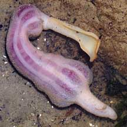
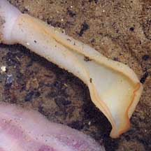
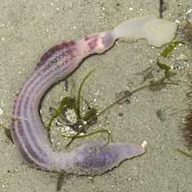
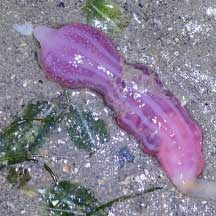
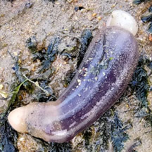
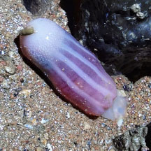
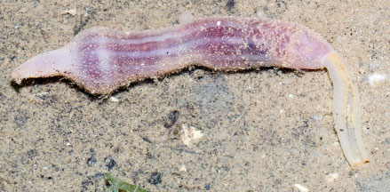
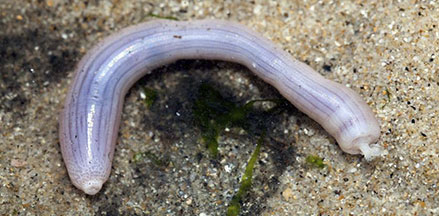
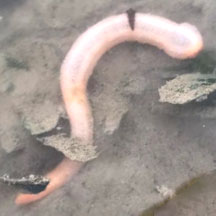

|
|
| worms text index | photo index |
| worms > Phylum Annelida > Class Echiura |
| Spoon
worms Class Echiura updated Oct 2016 Where seen? Spoon worms are sometimes seen above ground on our Northern shores, near seagrass areas. What are spoon worms? Spoon worms are worms belonging to Phylum Echiura. Some scientist place them in Phylum Annelidae like the more familiar earthworm. Spoon worms are not segmented like other annelids. There are only about 150 species of spoon worms, but they can be quite common in some marine ecosystems. Features: Those seen on our shores about 10cm long. Body unsegmented and sausage-like. In front of its mouth, it has a spoon-shaped thing, called a prostomium. The prostomium can extend up to 10 times its retracted length, in some species, reaching 2m long! In most, the prostomium is used to gather edible bits from the surface. Many live in U-shaped burrows in shallow water, others in rock or coral crevices. Sometimes mistaken for 'uprooted' sea anemones or sea cucumbers. More on how to tell apart sausage-shaped animals. What do they eat? Most are deposit feeders, collecting edible bits from the bottom of the sea. They do this by placing the prostomium against the surface and forming a kind of gutter over the surface. Tiny hairs on the surface of the prostomium bring edible bits to the mouth. Spoon babies: Spoon worms have separate genders. Eggs and sperm are released simultaneously into the water. The free swimming larvae eventually settle down. Role in the ecosystem: Apparently, echiurans may be important food for some fishes. In a study of Leopard sharks off California, large, meaty spoon worms were found to be their favourite food. |
 Changi, Aug 08 |
 Spoon-shaped prostomium. |
 Chek Jawa, Feb 07 |
| Spoon worms on Singapore shores |
On wildsingapore
flickr
|
| Other sightings on Singapore shores |
 Pasir Ris Park, Jun 22 Photo shared by Che Cheng Neo on facebook. |
 Pasir Ris Park, Jan 26 Photo shared by Zen Xuan He on facebook. |
 Changi (Fairy Point), Jul 24 Photo shared by Richard Kuah on facebook. |
 Changi, Jul 12 Photo shared by Marcus Ng on flickr. |
 Changi, May 16 |
 East Coast PCN, Jun 25 Photo shared by Kelvin Yong on facebook. |
Links
References
|